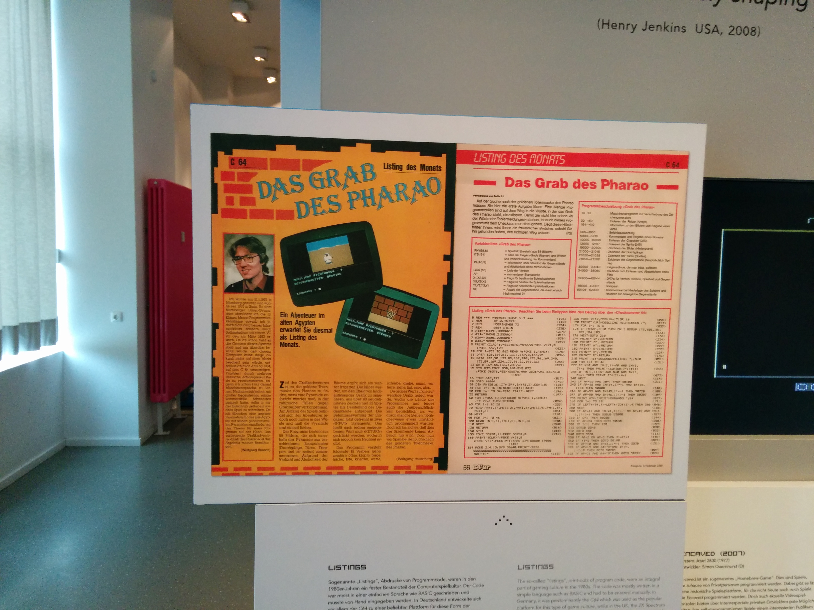

80s Game Programming
Oliver Zeigermann / @DJCordhose
Nils Hartmann / @nilshartmann
Online version at: http://djcordhose.github.io/games/slides/jsunconf.html
What do you mean by 80s game?
- In the 80s there were no good graphics
- There was no great sound
- The game idea was all there was
80s in Berlin Computer Museum

Who know this?

And this?
Or this?

Who has done this?
Pacman
Multiplayer Game Idea

What used to take me weeks in the 80s, we now can do in a single day
- Modern browsers support all you need
- JavaScript is great for fast development
- All your games are playable in the browser
Results of the 24h Game Jam, Hamburg, April 2014
Multi Player Pong
Crazy Frog
Hoverlord
Color Solitaire
Shooter: Schnapswurst
Bricks
Introduction to simple game programming using the canvas and OO-based JavaScript
Rendering on the canvas
var canvas = document.getElementById('game');
var context = canvas.getContext('2d');
// draw a ball
function draw() {
context.fillStyle = this.color;
context.beginPath();
context.arc(this.position.x, this.position.y, this.r, 0, Math.PI * 2);
context.fill();
context.closePath();
}
Basic idea: Reactive programming using a game loop
function loop() {
if (running) requestAnimationFrame(loop);
var now = now();
var deltaT = now - previousNow;
previousNow = now;
objects.forEach(function (object) {
if (object.update) {
object.update(deltaT);
}
});
context.clearRect(0, 0, canvas.width, canvas.height);
objects.forEach(function (object) {
if (object.draw) {
object.draw();
}
});
}
Sound using Web Audio
// highly simplified
var context = new AudioContext();
function createOscillator() {
// Oscillator defaults to sine wave
var oscillator = context.createOscillator();
oscillator.type = oscillator.SQUARE;
oscillator.frequency.value = 440;
// Connect the source to the output.
oscillator.connect(context.destination);
return oscillator;
}
Basic physics simulation is a no brainer
function update(deltaT) {
control();
// change position based on speed
this.position.x += this.velocity.x * deltaT;
this.position.y += this.velocity.y * deltaT;
// gravity
this.velocity.y += this.gravity * deltaT;
}
function ballsCollide(ball1, ball2) {
// a^2 + b^2 = c^2
var a = ball2.position.x - ball1.position.x;
var b = ball2.position.y - ball1.position.y;
var c = ball1.r + ball2.r;
return Math.sqrt(Math.pow(a, 2) + Math.pow(b, 2)) < c;
}
Control
var pressed = {};
window.onkeydown = function (e) {
pressed[e.keyCode] = true;
};
window.onkeyup = function (e) {
delete pressed[e.keyCode];
};
function control() {
if (38 in pressed) this.velocity.y -= this.acceleration * deltaT; // up
if (40 in pressed) this.velocity.y += this.acceleration * deltaT; // down
if (37 in pressed) this.velocity.x -= this.acceleration * deltaT; // left
if (39 in pressed) this.velocity.x += this.acceleration * deltaT; // right
}
OO-like framework
function GameObject(config) {
this.config = config;
}
function Ball(config) {
GameObject.call(this, config);
this.position = config.position;
this.r = config.r;
this.color = config.color;
}
util._extends(Ball, GameObject);
Ball.prototype.draw = draw;
Ball.prototype.update = update;
Game Live Demo
Raw game frame
- Demo
- Just a bouncing ball, no real game
- Basic OO concepts
- Basic keyboard control
- Experiment with basic physics parameters
Balls
- Demo
- First real game
- Uses collision detection
- Ball taken over from previous example without changes
- Now has game logic
- Turn on Sound!!!!!
- Experiment with game balancing (green / red ball rates)
Snake
- Demo
- Relative keyboard control
- Snake grows and gets faster
- Drawing based on balls representing snakes past
- Experiment with game balancing (gravity, velocity, acceleration, tail length)
Hoverlord
- Demo
- Most complex game
- Uses sprites
- Approximate collision detection (player is smaller than displayed, aliens larger)
- Complex game physics (perfect calculation of shots by sniper)
- Power packs
- Not completely merged into OO framework, yet
- Credit goes to Markus Rating
Excursion: Games in TypeScript
- Demo
- http://www.typescriptlang.org/
- Developed by Microsoft, Version 1.0 released on April, 2nd
- Allows static typed OO-programming in JS
- Based on new ECMAScript 6 concepts
- Compiles to "best practices" Javascript
- IDE Support: WebStorm, Visual Studio, Eclipse, Sublime, ...
Interfaces
Regular JavaScript:
function MovingObject(config) {
// ...
}
// What parameters are required for MovingObject ????
var mo = new MovingObject( { ??? } );
Interfaces
Define structure of objectsInterfaces
Using Interfaces - just as 'regular' JavaScript objects (Interface definitions already exists for a lot of standard JS libs)Classes
Define classes with public, private and static membersClasses
Instantiation and UsageModules
Define Modules with private and public membersModules
Using ModulesResources
Engines
- http://html5gameengine.com/
- http://kineticjs.com/
- http://phaser.io/: 2d engine with TypeScript support
Sound
Physics
WebRTC for Data
Books
Thank you
Questions / Feedback / Discussion
Oliver Zeigermann / @DJCordhose
Nils Hartmann / @nilshartmann